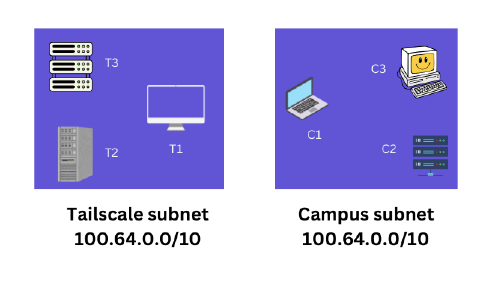
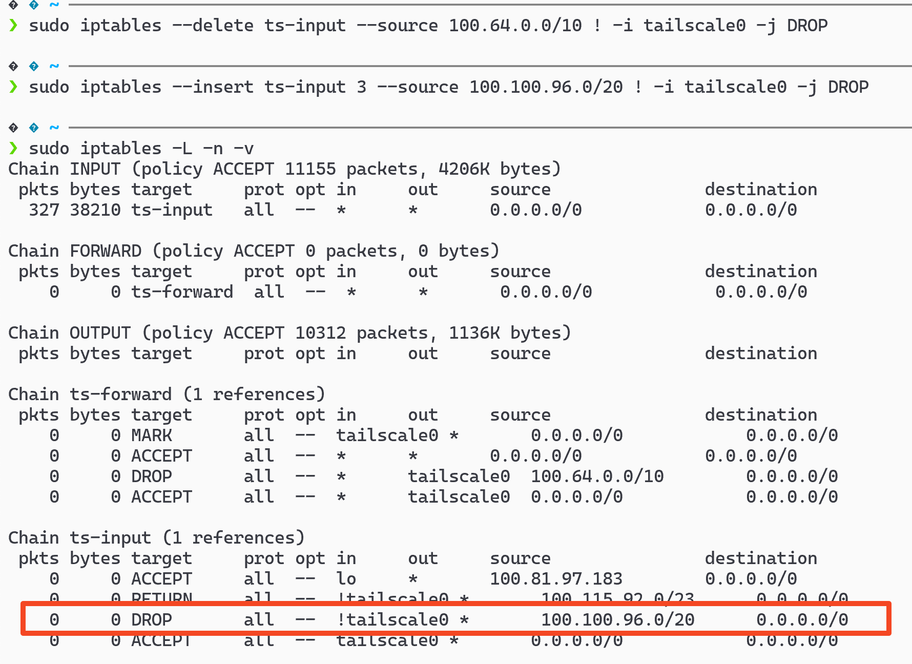

tailscale: Resolving CGNAT (100.x.y.z) Conflicts
Introduction
In an earlier blog post, I wrote about using tailscale to remotely access any device1. Tailscale uses 100.64.0.0/10 subnet2 to assign unique IP addresses to each device.
When a tailscale node joins another campus network3 (schools, universities, offices) that uses the same subnet, it will face conflicts. Let's see how to resolve this.
Private Network

In the above scenario, node C1 will be able to connect C2 & C3 as they are in the same network.
Once we start tailscale on node C1, it will get a 100.x.y.z IP address from tailscale subnet. Now, node C1 will not be able to connect to node C2 & C3.
To avoid conflicts with the existing network, we can configure tailscale to use a "smaller" subnet using "ipPool".
{ "acls": [ "..." ], "nodeAttrs": [ { "target": [ "autogroup:admin" ], "ipPool": [ "100.100.96.0/20" ] } ] }
Once it is configured, taiscale will start assigning IP addresses from the new subnet. Even though ip address allocation is limited, we can't still access nodes in other subnets due to a bug5 in tailscale.
As a workaround, we can manually update the iptables to route traffic to the correct subnet.
Lets look at the iptables rules added by tailscale by stopping it and then starting it.


The highlighted rule drops any incoming packet that doesn't originate from tailscale0 interface, and source IP is 100.64.0.0/10 (100.64.0.0 to 100.127.255.255).
Let's delete this rule and add a new rule to restrict the source IP to 100.100.96.0/20 (100.100.96.1 to 100.100.111.254).
$ sudo iptables --delete ts-input --source 100.64.0.0/10 ! -i tailscale0 -j DROP $ sudo iptables --insert ts-input 3 --source 100.100.96.0/20 ! -i tailscale0 -j DROP

Conclusion
By configuring tailscale to use a smaller subnet, we can avoid conflicts with existing networks. Even though there is a bug in tailscale, we can manually update iptables to route traffic to the correct subnet.
Need further help with this? Feel free to send a message.

Anand Reddy Pandikunta (ChillarAnand)
Improving Health & Wealth with Technology